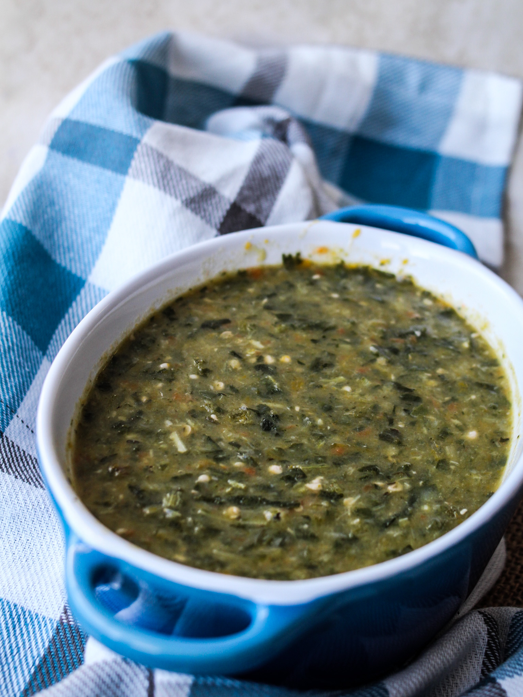

Callaloo Recipe

Description
Callaloo is deeply rooted in the history of the Caribbean, with origins tracing back to the 16th century, when enslaved Africans used local plant life and ready aromatics to create a masterful meal out of seemingly nothing.
Callaloo has many variations throughout the Caribbean and its diaspora, but the one in this recipe uses taro leaves, okra, pumpkin, coconut milk, onions, garlic, and Scotch bonnet peppers.
Ingredients
- 2 Tbsp. vegetable oil
- 1 small onion, finely chopped
- 6 garlic cloves, finely chopped
- 4 scallions, chopped
- 1 large bunch cilantro, finely chopped
- 2 Tbsp. thyme leaves
- 1 bunch collard greens, thick stems trimmed, thinly sliced
- 4 cups baby spinach
- 8 large okra, stems removed, thinly sliced
- 2 habanero chiles, 1 finely chopped, 1 whole
- 2 cups 1" pieces peeled butternut squash
- 1 13.5-oz. can unsweetened coconut milk
- 1 tsp. freshly ground black pepper, plus more
- Kosher salt
- Steamed rice or baked macaroni pie (for serving)
Steps
Step 1
Heat oil in a large Dutch oven or other heavy pot over medium-high. Add onion and garlic and cook, stirring often, until softened and translucent, about 1 minute. Add scallions, cilantro, and thyme and cook, stirring, 1 minute.Step 2
Stir in collard greens and spinach just to wilt slightly, then add okra, chopped chile, squash, coconut milk, and 1 tsp. pepper; season with salt. Stir well, then place whole chile on top. Reduce heat to medium-low, cover pot, and simmer until squash is tender and greens are wilted and softened, 40–45 minutes.Step 3
Remove and discard whole chile (it should be shriveled but still intact). Using an immersion blender, purée Callaloo until smooth. (If you don’t have an immersion blender, blend in batches in a regular blender). The Callaloo should be thick and viscous. Taste and season with more salt and pepper if needed. Serve with rice or baked macaroni pie.